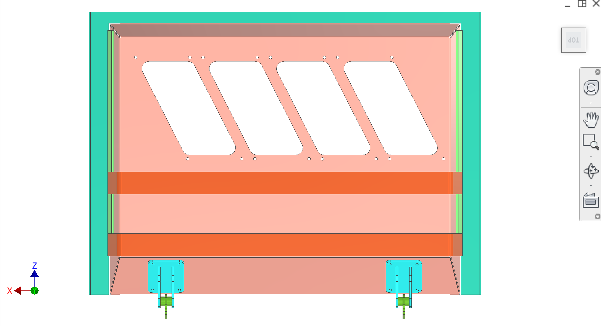

O corpo do alimentador é o revestimento estrutural e o conjunto da tampa dentro dosistema de ingestão de fruta. Ele suporta os subconjuntos de alimentação por estação e tubos de entrada, fornece contenção de respingos para a zona de extração, e abre em uma dobradiça para acesso de manutenção e lavagem CIP.
Introdução
O corpo alimentador é a "concha" estrutural que suporta os subconjuntos de alimentação por estação e tubos de entrada. É projetado para abrir em uma dobradiça para acesso e limpeza. Ele também fornece controle de respingos para suco e spray de limpeza ficar dentro da zona de extração e drenar para a eliminação.
& Componentes da chave de cor
Elementos-chave e intenção (as cores podem variar de acordo com as figuras CAD).
Cor( s)
Componente
—
Corpo do alimentador / shell— gabinete de chapa metálica que suporta subconjuntos de alimentação e cria contenção de respingos.
—
Tampa superior— conceito: painel de tampa em chapa de aço ~2 mm; montagem em dobradiças e contraventações; acesso ao serviço/CIP.
—
Preparar/reforçar— reforço estrutural para evitar encurvaduras de tampas e distribuir cargas de dobradiças; projecto ainda TBD (costeletas dobradas versus soldadas).
—
Recortes de subconjunto de alimentação— recortes diagonais/portos em que se encontram as placas de montagem subconjunto de alimentação; destinadas a ser modulares (rebitadas) para iteração.
Figura 1.Isométrico - corpo alimentador / shell com dobradiça em contexto.

Figura 2.Topo — corpo alimentador com dobradiças e aberturas de alimentação-subconjunto.
Números recomendados (clareza do contratante)
Adicionar figura:tampa / lábio de prateleirageometria mostrando como a tampa pende na zona de extração para manter o spray dentro (intenção de contenção).
Adicionar figura:caminho de carga da dobradiça— conceito de reforço/reforçamento para que as reações de dobradiças não carreguem folhas finas de ~2 mm (figuras 1-2 mostram a colocação da dobradiça; detalhes ainda úteis).
Adicionar figura:recortes de montagem de alimentação-submontagemepadrão rebitna shell (swap modular) com chamadas.
Discussão
Desenho e intenção difíceis
Objecto— fornecer uma caixa rígida e limpável para o mecanismo de ingestão de frutos, permitindo o acesso rápido para manutenção e CIP/lavagem.
Modularidade— Subconjuntos de alimentação (placa de montagem + tubos + mola de sincronização) são concebidos para serem construídos como um módulo, depois rebitados no corpo do alimentador. Os tubos podem ser trocados pela perfuração de rebites à medida que o design evolui.
Problemas e riscos conhecidos
Contenção por pulverização— a geometria da tampa e dos lábios de prateleira deve manter o sumo/spray dentro da zona de extracção. A tampa deve inclinar-se para dentro, de modo que o pulverizador para cima drena de volta para a região de extração/eliminação, em vez de escapar para as paredes exteriores.
Cargas de força/rocha— A tampa é fina (conceito ~2 mm). As montagens devem pousar sobre força reforçada, não diretamente em folha fina, para evitar rasgar e flambagem.
Segurança das extremidades— todas as arestas de corte devem ser desembargadas/embainhadas para que os operadores não sejam cortados durante a desmancha sazonal/limpeza.
DFM e fabricação (China)
Processo de chapa metálica— Contratante para propor uma estratégia de dobra contra soldadura para a concha e o revestimento. Preferir bainhas dobradas e costuras contínuas sempre que possível em zonas de respingo.
Rebites contra pregos soldados— As montagens modulares rebitadas são aceitáveis para a iteração; o contratante pode propor uma melhor fixação higiénica (estudos fora da zona de salpico, pregos de solda, etc.) para a concepção pronta para a produção.
Perguntas para o contratante
Proponha o método de fabricação da casca do alimentador (folha dobrada vs soldado) que alcança rigidez e boa higiene (sem bolsos, boa drenagem) com processos disponíveis na China.
Proponha um design de dobradiça + bracing que distribua cargas com segurança na concha sem flambagem local/fragmentação.
Reveja a geometria de lábio/overhang da tampa para garantir a contenção e drenagem da pulverização na zona de extração.
Interfaces
Entrada:A fruta entra através de tubos de entrada de classificador/linhas a montante.